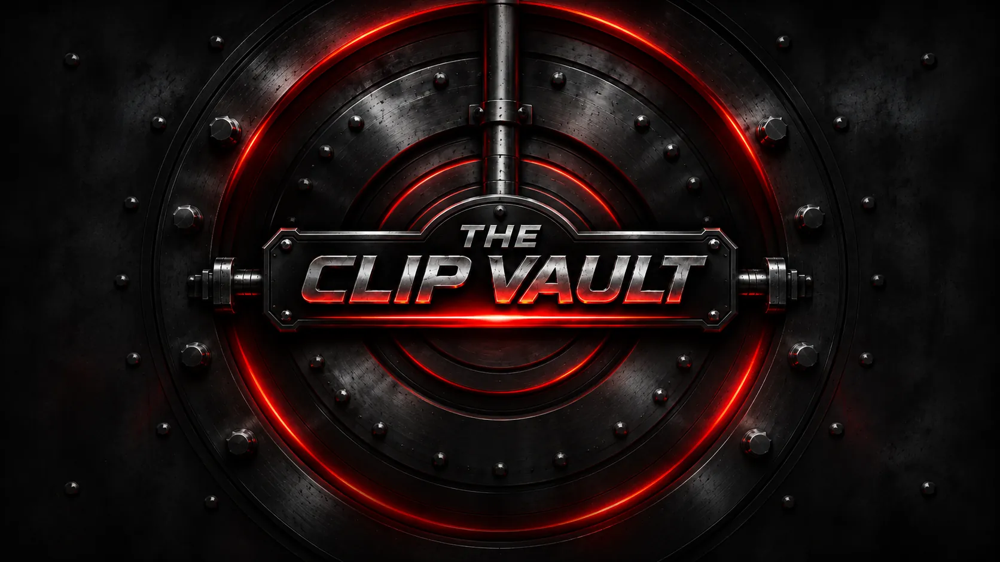

Discover what’s trending
Explore public YouTube video metadata and rank interesting channels and recent uploads for editorial research.
Jarvis Ultimate is a private Windows application for researching video trends, selecting highlights from authorized footage, creating Shorts, and publishing to the YouTube channels you connect.
Desktop-first · Owner-authorized YouTube access · No website account required
Jarvis 26 combines automatic processing tools with explicit account permissions. Features depend on successful setup and available local AI models.
Explore public YouTube video metadata and rank interesting channels and recent uploads for editorial research.
Analyze footage supplied by its rights holder, select candidate highlights, and export captioned short-form videos.
Sample completed video frames and compare them with speech context using an optional compatible vision model.
Authorize a YouTube channel through Google's OAuth permission screen. Publish only with permissions granted by the owner.
Optionally send email notifications after confirmed uploads using a separately configured Gmail SMTP account.
On Windows, application tokens and saved connection details are encrypted with the signed-in user's Windows credentials.

A broad entertainment clipping channel: gaming, livestreams, interviews, and funny conversations. Jarvis is being developed to assist the editing workflow with licensed or original source footage.
The features below are planned, not capabilities available in the current Jarvis 26 release.
One connected channel, local editing, candidate review, optional uploads, and upload alerts. Requires setup and testing.
Separate publishing calendars, account authorizations, and performance monitoring for additional YouTube channels.
Creative AI-video workflows, episode continuity, audience decisions, and supported Instagram publishing.
For privacy requests, account-access questions, or software support, contact the operator.